賽の河原/新潟県両津市
佐渡ヶ島最北端の地に大野亀と二ツ亀という景勝地がある。 この二つの亀さんに挟まれた海岸沿いに賽の河原と呼ばれる海蝕洞窟がある。 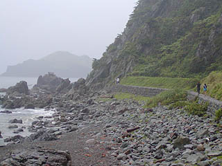 願という名前の集落から海沿いに遊歩道を歩いていく。 ちなみにこの日は佐渡地方、大雨洪水警報が発令されていました。津波警報じゃなくて良かった・・・ 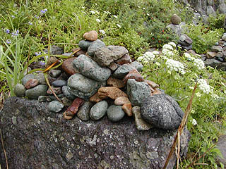 海沿いの道をしばらく歩くと注連縄が張られていて、そこから先があの世の入口なのだろう。海岸の石を積んだケルンがそこかしこに現れてくる。 この日は休日ということもあってか、親子の観光客が先を歩いていた。 決して家族で来て楽しいようなところでは無いと思うんですけど、いいんでしょうか。 ちなみに賽の河原近辺は石が多く足元が若干悪いのでハイヒールじゃあ危ないよっと・・・ああ、お母さん転んじゃったあ・・・ で、賽の河原である。 洞窟は海から数メートル内陸にある。島のほぼ最北端にある洞窟は賽の河原がなくても死を連想させるに充分なロケーションだ。 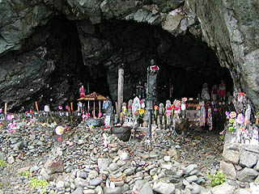 それまで雨脚が強くモノトーンな景色だったところにいきなり様々な色が飛び込んで来た。 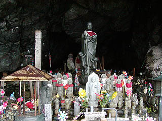 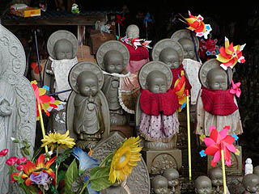 赤いヨダレ掛けを付けたたくさんのお地蔵さんが並んでいる。 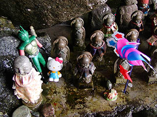 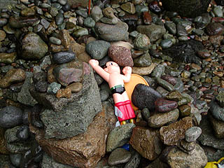 お地蔵さんと一緒におもちゃも供えられている。人形が多い。 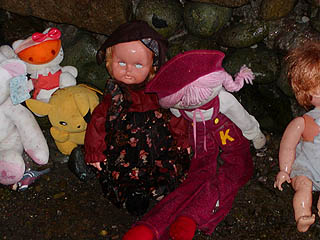 女の子コーナー。人形が白目剥いててちょっと怖め。 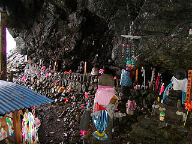 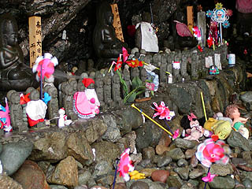 民間信仰の行き着く先はある種グロテスクな光景に行き着く事が多い。 仏教、神道といった在来宗教はある程度理論化された共通のビジュアルイメージをかなり明確に保有している。一方、民間信仰の多くは（勿論に本全土に広がる民間信仰というものもある）その地方独自の言語、作法、観念から構成されている場合が多く、その地方で通じれば良い、という内向的なケースが多いためグローバルイメージの必然性があまりない。むしろ現世利益を目的としているために見た目など気にしている余裕など無いので近視眼的で即物的ななモノが集積する風景が出現するのではなかろうか。 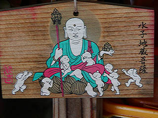 それが逆に視覚的なインパクトを与えてくれるのは信仰というものがいかに視覚的なものに頼っているかということを物語っているようにも思える。 従って、青森の恐山や山形の最上観音霊場やここの賽の河原にみられる死者の供養形態、特に幼子の追善供養の形態のように信仰が篤ければ篤い程、グロテスクなビジュアルイメージが出現しやすいのでは。 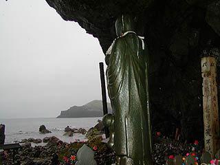 洞窟の中から外を見る。向こうに見えるのは二ツ亀だろう。雨でけむっていて良く見えないが。 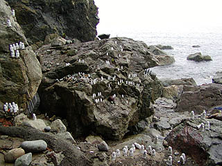 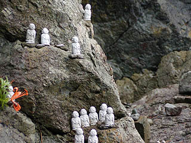 洞窟の外には小さな白い塊があちこちに点在している。 遠目には宮崎アニメに出てきそうな牧歌的な風景だがよくみればこれが全部白いお地蔵さん。 何やら一体一体が海の向こうを眺めているようだ。 改めて一体一体に悲しい物語が存在することを実感する。 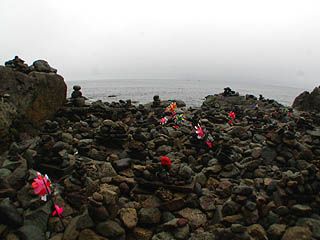 波打ち際には無数の石積と風車。その向こうには日本海。 死者はこの海を渡っていくのだろうか、それとも洞窟の奥に入っていくのだろうか。
2003.7.
珍寺大道場 HOME